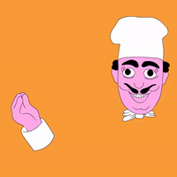
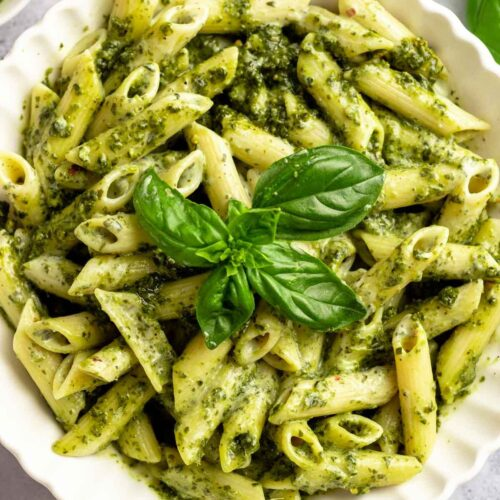

Pesto Pasta Recipe

Description
The FIRST love for Italian Food. Mama Mia!
Ingredients
- 1 quantity homemade pesto (Or you can get a glass of Pesto sauce from your convenience store)
- 300 - 350 g of your pasta choice Penne and Spaghetti are my favourites
- 2 tsp salt
- 3/4 cup pasta cooking water
- Grated Parmesan
Steps
- Bring a large pot of water to the boil with the salt.
- Add pasta and cook for the length of time per the packet.
- Just before draining, scoop out 1 cup of of the pasta cooking water.
- Drain pasta in a colander, leave it for a minute.
- Transfer pasta to a bowl (do not use pasta cooking pot, too hot).
- Add pesto and 1/4 cup of pasta water. Toss to coat pasta in pesto, adding more water if required to make pasta silky and saucy, rather than dry and sticky.
- Taste, add more salt and pepper if desired.
- Serve immediately, garnished with fresh parmesan.
See how simple it is? NOW ENJOY ITTTT
